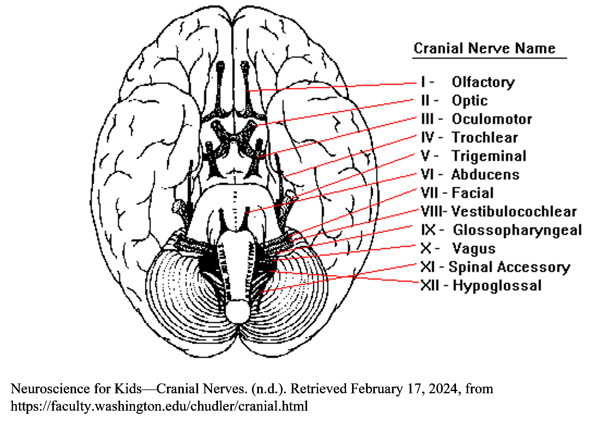

Psychopathic Traits and Conduct Problems in Children: Effects of Collective Efficacy, Heart Rate, and Sex
Kofler, L., Zhang, W., Gao, Y (2022)
In the current study, the moderating effects of resting heart rate (a measure of biological sensitivity) and sex on the relationships between neighborhood collective efficacy, psychopathic traits and antisocial behaviors were examined in a sample of 245 8–11 year-old boys and girls.
Some children are biologically more susceptible to environmental influences, and Biological sensitivity may be expressed differently in boys and girls.
In the current study, the authors investigated the effect of neighborhood characteristics on the three dimensions of child psychopathy and the potential moderating effect of HR. And if there is a moderating effect by sex.
Hierarchical regression analyses demonstrated that:
Both grandiose-manipulative and callous-unemotional traits were associated with neighborhood social processes, but the relationship varied by child’s sex and heart rate level.
Daring-impulsive traits were not associated with either social processes or heart rate.
In addition, aggression and delinquency were associated with social control, and the relationship was moderated by heart rate and sex.
Findings suggest that neighborhood social processes are distinctly associated with the three dimensions of childhood psychopathy and with conduct problems in children with a specific psychophysiological profile, and that these relationships are further differentiated by sex.
Per the paper: Accordingly, Diamond et al. (2012) suggested that there may be a “trade-off” between autonomic flexibility and self-regulation, which may be weighted differently in boys and girls, potentially giving rise to differences in observed autonomic reactivity.
This may also partially explain the surprising finding that for boys with lower HR and girls with higher HR, higher social control was actually a risk factor for aggressive behavior, a finding that is contradictory to the well-established negative association between HR and antisocial behavior (Sampson et al., 2002).
It is possible that while higher HR in boys and lower HR in girls are adaptive physiological states for responding to favorable social processes, the opposite resting states may index maladaptive physiological states.
Prior Research
This article examined neighborhood social processes which included social control and social cohesion. Social control is contrasted with self-control in control theories on crime. Cited by the authors Self-Control and Social Control: An Examination of Gender, Ethnicity, Class and Deliquency (Nakahaie, M. et al. 2000) describes control theories in general as suggesting that left on their own(in an unsocialized state) people will deviate.
Internal and external mechanisms prevent them from doing so.Social control can be operationalized as a bond to some part of society. The social bond is said to have four dimensions: attachment or ties to significant others(peers or parents), commitment or investment in conventional society(education), involvement in conventional behavior(participation in recreational activities) and belief in society’s values(respect for law and authority)
Also cited by the authors the, highly cited Biological sensitivity to context: I. An evolutionary–developmental theory of the origins and functions of stress reactivity(2005), along with phylogeny, and animal studies cites previous research on biological stress response and behavior outcomes.
The significance of reactivity to environment or stressors is detailed:
Of particular relevance is the personality construct of reactivity (Strelau,1983), which indexes relatively stable individual differences in the intensity (or magnitude) of response to stimulation.
Higher reactivity indicates less gating of internal information stemming from external events, and more reactive individuals are therefore susceptible to relatively weak environmental signals, have comparatively low optimal levels of arousal, and are less able than others to endure strong stimulation for prolonged periods of time
Boyce and Ellis suggest there is a BSC phenotype due to differences in action of genetic and environmental influences that are hypothesized to constitute variations in susceptibility to environmental influence.
Cited by Boyce & Ellis: Bauer (2002) found, in a cross-sectional study, that the absolute levels of activation in either the sympathetic or adrenocortical system were less predictive of serious behavior problems in 4- to 8-year-old children than was the lack of concordance between the systems…children with activation asymmetries had the most, suggesting that dissociations between the sympathetic and adrenocortical arousal under conditions of challenge put children at risk for early psychopathology.
Relevant to current paper, according to Biological sensitivity to context theory:
Children with higher physiological reactivity are more sensitive to their social environments whether it is supportive or adverse
Children with low physiological reactivity are not as affected by their environment
Highly reactive children display poorer behavioral and health outcomes in harmful contexts such as adverse neighborhoods, or flourish under supportive environments.
Some children are biologically more susceptible to environmental influences
Some children are biologically more susceptible to environmental influences, and Biological sensitivity may be expressed differently in boys and girls.
In the current study, the authors investigated the effect of neighborhood characteristics on the three dimensions of child psychopathy and the potential moderating effect of HR. And if there is a moderating effect by sex.
Psychopathy begins at an early age and remains stable throughout the lifespan. What factors are associated with development of these traits. Previous studies have demonstrated that psychophysiological abnormalities such as low resting heart rate were significant correlates of psychopathic traits in children and adolescents.
Growing evidence suggests social factors also influence the development of psychopathic traits i. Peer victimization ii. Poor household circumstances iii. High levels of stress within the family iv. Negative parenting practices: 1. Corporal punishment 2. Inconsistent discipline 3. Poor supervision and monitoring v. Family and peer social factors previous research 4. Neighborhood characteristics research is scarce
Responses of biological system to stressors is indexed by different physiological measures: ANS, adrenocortical system resting HR acts as a moderator of various context-behavior relationships, resting heart rate is used as the physiological index of biological sensitivity in the study.
Reactivity
Neighborhood Factors
social cohesion social control collective efficacy
The Autonomic Nervous System: The Parasympathetic and Sympathetic Nervous System

Grandiose-Manipulative(GM), Callous-Unemotional(CU), Daring-Impulsive(DI)
Comparing boys and girls:
There were no significant sex differences in delinquency, social control, social cohesion, or HR.
Independent samples t-tests showed that boys scored higher than girls in GM, CU traits DI and aggression. Boys were also slightly older than girls in our sample
There were no significant sex differences in delinquency, social control, social cohesion, or HR.
Social cohesion was negatively associated with CU traits in girls (more social cohesion = less callous unemotional traits) and with resting HR in boys.
GM and DI traits were not correlated with any neighborhood social processes or resting HR in either sex.
For boys, the third step that included the interaction between social cohesion and resting HR was significant. There were no significant main effects of social cohesion or resting HR, however the interaction between social cohesion and resting HR was significant.
Higher social cohesion was associated with higher GM scores, but only in boys with higher HR
Lower social control was associated with higher CU traits in girls with lower HR.
Lower social control were associated with higher delinquency in girls with lower HR
Kofler, L., Zhang, W. & Gao, Y.(2022). Psychopathic Traits and Conduct Problems in Children: Effects of Collective Efficacy, Heart Rate, and Sex. J Psychopathol Behav Assess 44, 98–114 https://doi-org.brooklyn.ezproxy.cuny.edu/10.1007/s10862-021-09944-6
Nakhaie, M. R., Silverman, R. A., & LaGrange, T. C. (2000). Selfcontrol and social control: An examination of gender, ethnicity, class, and delinquency. The Canadian Journal of Sociology, 25(1), 35–59
Use the link below or in the bottom left to navigate to the main page